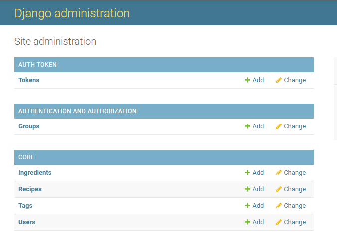
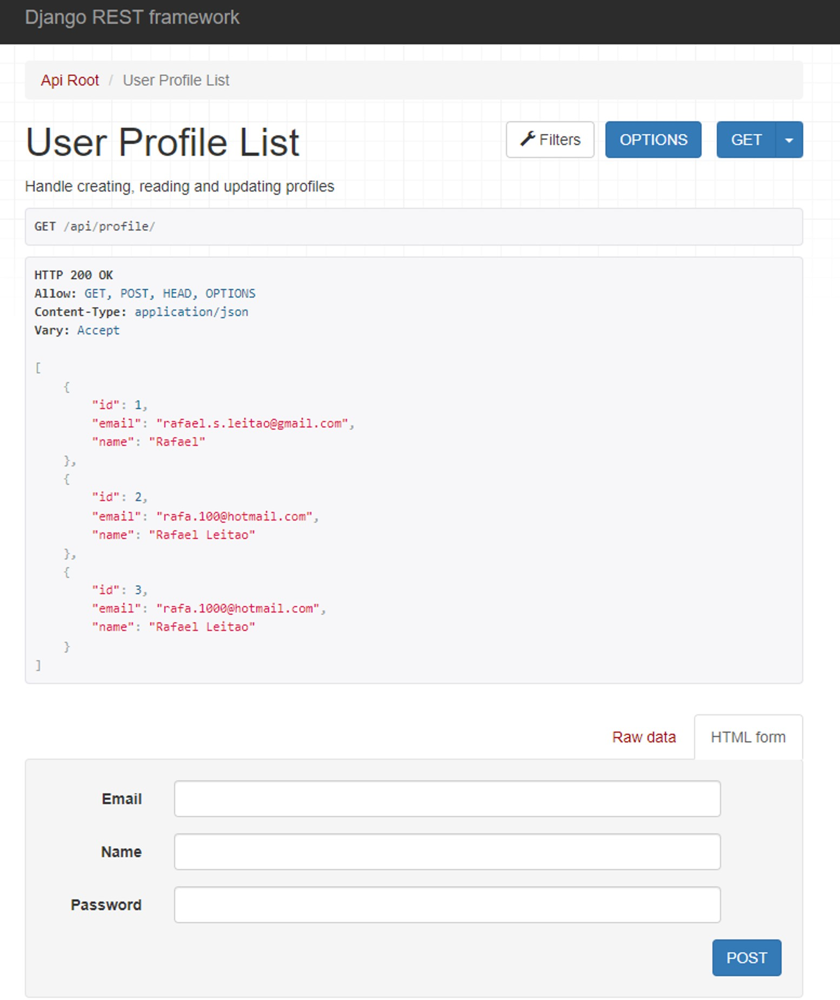
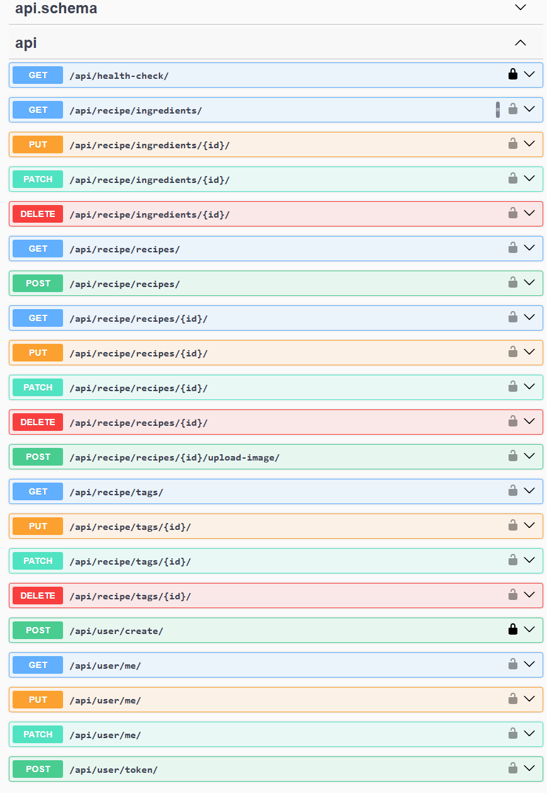

Get in Touch

The Recipe API is a backend REST API built using Python, Django, and Django REST Framework (DRF) to provide seamless recipe management capabilities. This project allows users to create, update, and delete recipes, as well as associate them with ingredients and tags. Designed with modern development principles, it ensures reliability, scalability, and security.
Comprehensive Recipe Management: Users can create and manage recipes with titles, cooking times, ingredients, and categories. Recipes can be filtered by ingredients and tags, providing an organized and user-friendly way to store and retrieve recipe information.
Secure User Authentication: The API includes a JWT-based authentication system, ensuring that only registered users can manage their own recipes. User sessions are securely handled, preventing unauthorized access to personal recipe data.
Image Upload and Storage: The API supports image uploads, allowing users to attach images to their recipes. The uploaded images are stored securely and can be accessed via API endpoints, enhancing the visual experience for users managing their recipes.
Health Check API: A dedicated health check endpoint is implemented to monitor system status, ensuring that the API remains functional and reliable in production environments. This feature is essential for maintaining system integrity and performance.
Scalable and Modular Design: The architecture follows a modular approach, making it easy to extend with additional features. The project is fully containerized with Docker and Docker Compose, ensuring consistency across development and production environments.


Technology Stack:
Django & Django REST Framework (DRF): The core framework used to build a structured and scalable backend API.
PostgreSQL: A powerful relational database system that provides efficient data storage and retrieval.
Docker & Docker Compose: Used for containerization, ensuring seamless deployment and development workflow.
GitHub Actions: Integrated CI/CD pipeline that automates testing and ensures code reliability.
Test-Driven Development (TDD): The project follows best practices with 40+ unit tests covering key API functionalities.
Get in Touch